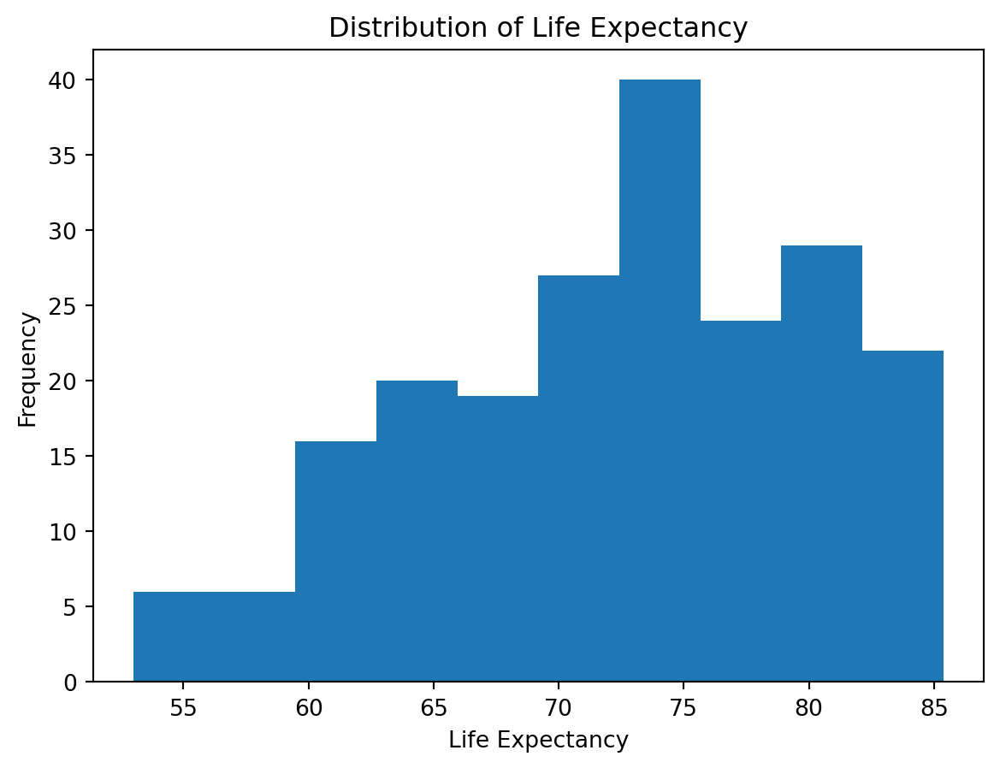
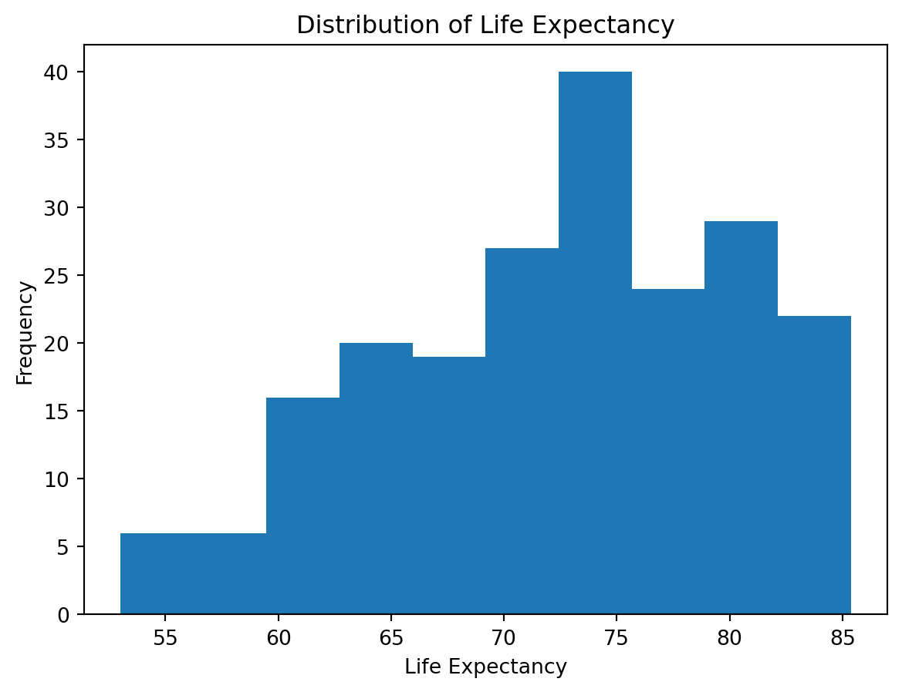
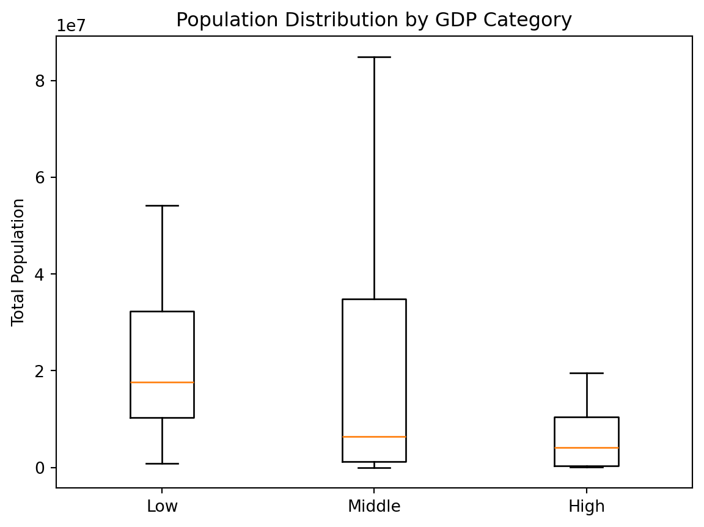
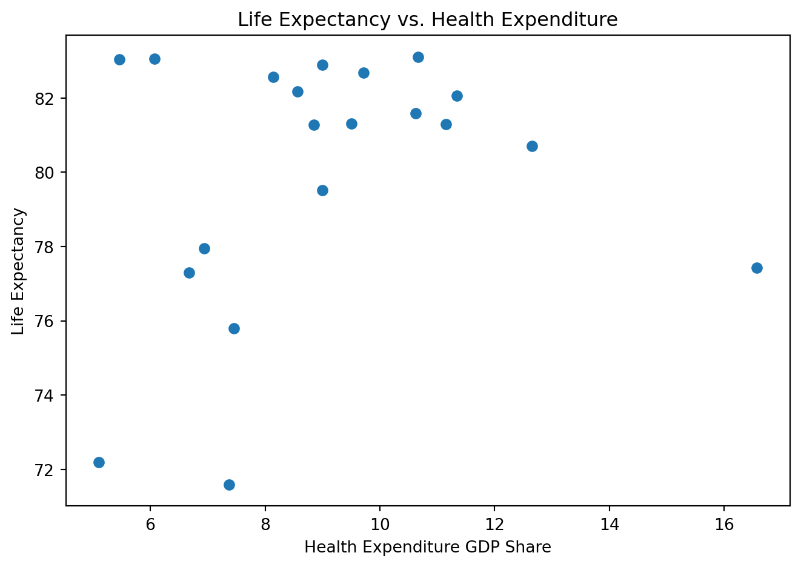
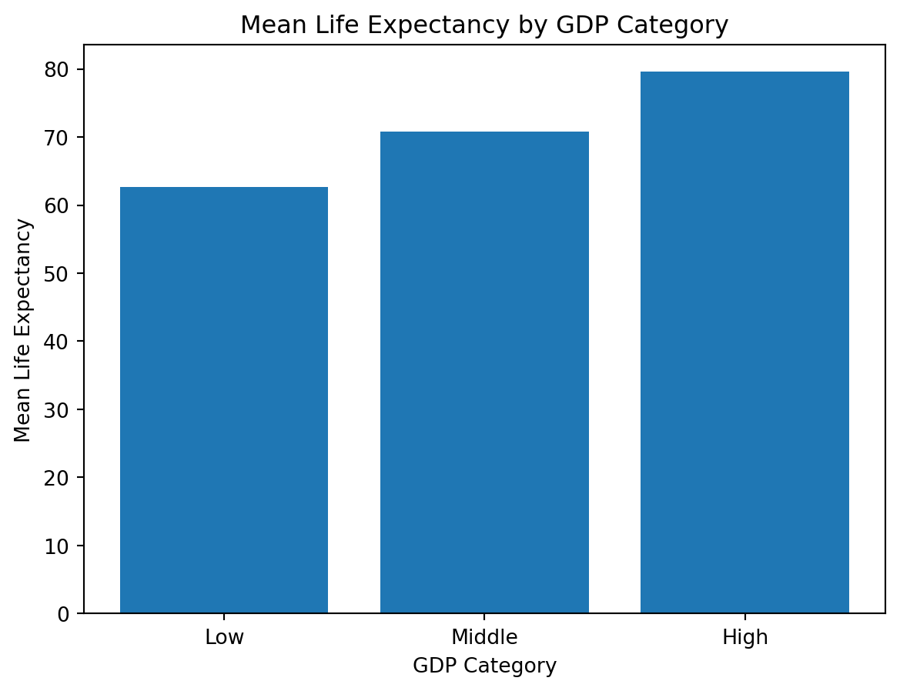

import pandas as pd
import matplotlib.pyplot as plt
df = pd.read_csv("wdi.csv")
plt.hist(df["life_expectancy"])
plt.xlabel("Life Expectancy")
plt.ylabel("Frequency")
plt.title("Distribution of Life Expectancy")
plt.show()
This graph shows the distribution of life expectancy across countries in 2022. We have a left skewed distribution with a median of around 70-75 years.
import pandas as pd
import matplotlib.pyplot as plt
df = pd.read_csv("wdi.csv")
plt.hist(df["life_expectancy"])
plt.xlabel("Life Expectancy")
plt.ylabel("Frequency")
plt.title("Distribution of Life Expectancy")
plt.show()
Now, let’s look at GDP. We’ll divide countries into the following GDP categories:
The resulting frequency table shows that the majority of countries have middle (91) or high (74) GDP. While there aren’t as many low (38) GDP countries comparatively, they still make up a signficant amount.
import pandas as pd
df = pd.read_csv("wdi.csv")
df["gdp_category"] = pd.cut(
df["gdp_per_capita"],
bins=[-float("inf"), 2000, 14000, float("inf")],
labels=["Low", "Middle", "High"]
)
freq_table = df["gdp_category"].value_counts()
print(freq_table)gdp_category
Middle 91
High 74
Low 38
Name: count, dtype: int64This graph shows the distribution of population by GDP Category. The boxplots show that low GDP countries have higher populations thatn middle and high GDP countries. See GDP categories in Section 1.2.
import pandas as pd
import matplotlib.pyplot as plt
df = pd.read_csv("wdi.csv")
df["gdp_category"] = pd.cut(
df["gdp_per_capita"],
bins=[-float("inf"), 2000, 14000, float("inf")],
labels=["Low", "Middle", "High"]
)
plt.boxplot([
df[df["gdp_category"] == "Low"]["total_population"],
df[df["gdp_category"] == "Middle"]["total_population"],
df[df["gdp_category"] == "High"]["total_population"]
], showfliers=False)
plt.xticks([1, 2, 3], ["Low", "Middle", "High"])
plt.ylabel("Total Population")
plt.title("Population Distribution by GDP Category")
plt.show()
Life expectancy generally increases with health expenditures, though plateaus around 9 (health expenditure) at approximately 82 years. See life expectancy distribution in Section 1.1. For research on life expectancy and health expenditures, see this study from the International Information and Engineering Technology Association (Morina et al. 2022).

The following graph shows that life expectancy increases, on average, with GDP. See GDP categories in Section 1.2. For research on GDP and country expenditures, see this study from The Lancet (Shkolnikov et al. 2019).

Data sourced from World Bank Group.
The following table shows the precise mean life exectancies by GDP category.
| Low | Middle | High |
|---|---|---|
| 62.69 | 70.81 | 79.55 |